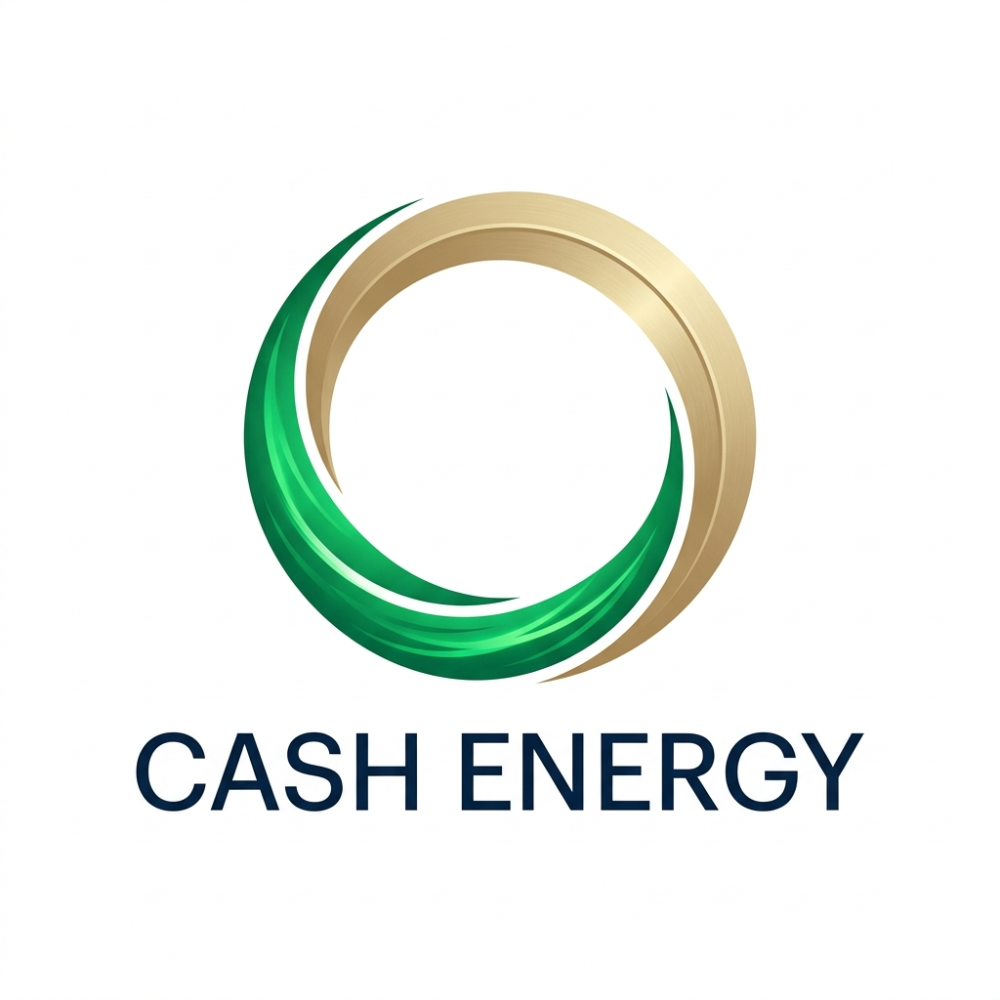
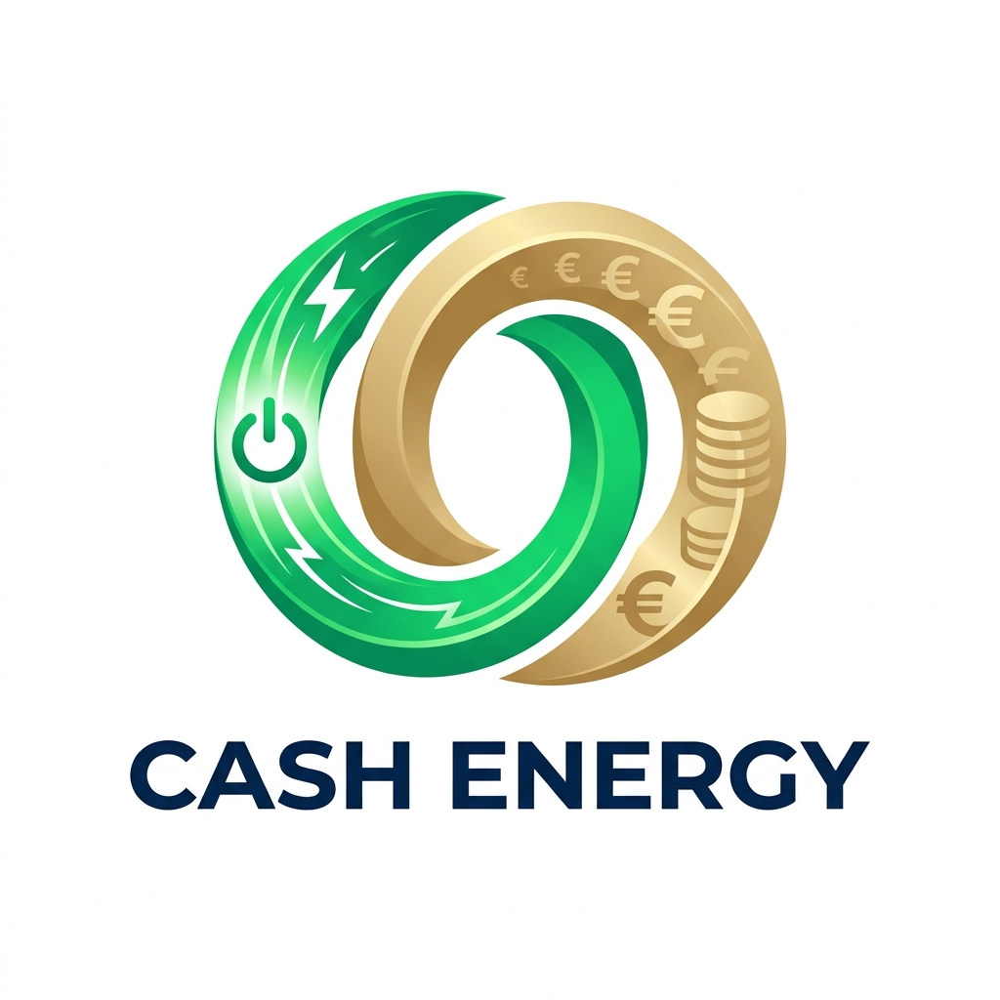

Aplicando el criterio de Zelmar: evocamos la moneda y la liquidez con geometría pura y elegante, sin signos literales de divisa.
Un círculo continuo donde el arco dorado evoca la silueta de una moneda de valor y la curva verde representa el flujo de energía. Minimalista, prestigioso y sin ningún símbolo evidente.

El contorno de bombilla en verde esmeralda alberga un disco de oro cepillado con facetas geométricas de crecimiento. La energía genera valor interno de forma limpia y sofisticada.
